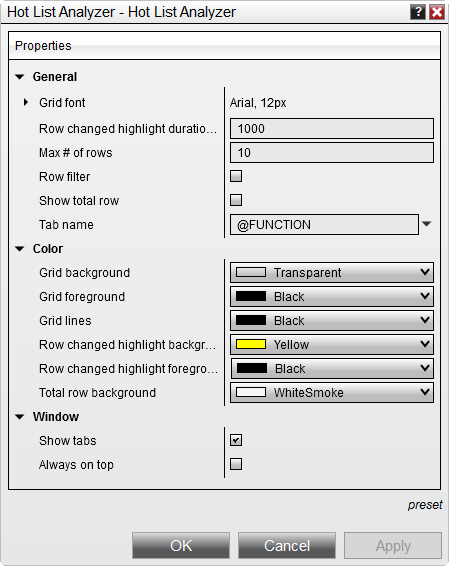

|
<< Click to Display Table of Contents >> Hot List Analyzer Properties |


|
Hot List Analyzer Properties
|
<< Click to Display Table of Contents >> Hot List Analyzer Properties |
|
The Hot List Analyzer can be customized to your preferences in the Hot List Analyzer Properties window.
 How to access the Hot List Analyzer properties window
How to access the Hot List Analyzer properties window
To access the Hot List Analyzer Properties window, press down on your right mouse button inside the Hot List Analyzer window and select the menu Properties... |
 Available properties and definitions
Available properties and definitions
The following properties are available for configuration within the Hot List Analyzer Properties window

Property Definitions
|
 How to preset property defaults
How to preset property defaults
Once you have your properties set to your preference, you can left mouse click on the "preset" text located in the bottom right of the properties dialog. Selecting the option "save" will save these settings as the default settings used every time you open a new window/tab.
If you change your settings and later wish to go back to the original settings, you can left mouse click on the "preset" text and select the option to "restore" to return to the original settings. |